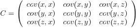
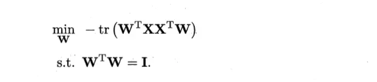
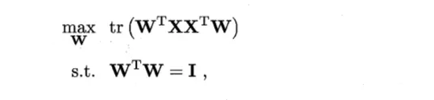
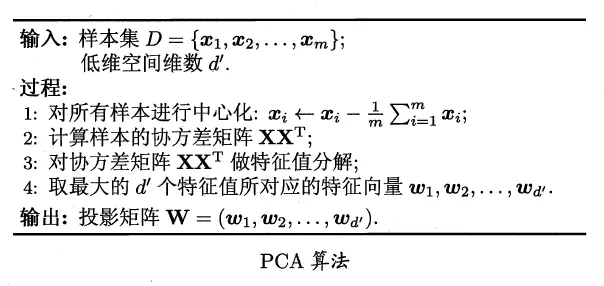

PCA(Principal Component Analysis)，即主成分分析方法，是一种使用最广泛的数据降维算法，是基于变量协方差矩阵对数据进行压缩降维、去噪的有效方法，PCA 的思想是将 n 维特征映射到 k 维上（k < n)，这 k 维特征称为主元，是旧特征的线性组合，这些线性组合最大化样本方差，尽量使新的 k 个特征互不相关。
相关概念
协方差(Covariance)
协方差是描述不同变量之间的相关关系，协方差>0 时说明 X 和 Y 是正相关关系，协方差<0 时 X 和 Y 是负相关关系，协方差为 0 时 X 和 Y 相互独立。
协方差的计算是针对两维的，对于 n 维的数据集，可以计算 C(n,2)种协方差。
例如对于三维（x,y,z），其协方差矩阵如下，可看出协方差矩阵是一个对称矩阵（symmetrical），其对角线元素为每一维的方差：

特征值和特征向量
A 是 n 阶方阵，如果存在数 m 和非零 n 维列向量 x，使得 Ax=mx 成立，则称 m 是矩阵 A 的一个特征值，向量 x 是矩阵 A 的特征向量。
PCA
问题引入
对于正交属性空间中的样本点，如何使用一个超平面对所有的样本进行恰当的表达？
目标
能够达到要求的超平面大概应该具有这样的性质：
- 最近重构性：样本点到这个超平面的距离都足够近。
- 最大可分性：样本点在这个超平面上的投影点能尽可能分开。
有趣的是：
基于最近重构性和最大可分性，能分别得到主成分分析的两种等价推导。
从最近重构性出发，PCA 优化目标为：

从最大可分性出发，PCA 优化目标为：

显然，上述两个优化目标是等价的。
因此，只需对协方差矩阵进行特征值分解，将求得的特征值排序即可。
算法步骤
- 去掉数据的类别特征（label），将去掉后的 d 维数据作为样本
- 计算 d 维的均值向量（即所有数据的每一维向量的均值）
- 计算所有数据的协方差矩阵（或者散布矩阵）
- 计算特征值（e1,e2,…,ed）以及相应的特征向量（lambda1,lambda2,…,lambda d）
- 按照特征值的大小对特征向量降序排序，选择前 k 个最大的特征向量，组成 d*k 维的矩阵 W（其中每一列代表一个特征向量）
- 运用 d*K 的特征向量矩阵 W 将样本数据变换成新的子空间。（用数学式子表达就是，其中 x 是 d*1 维的向量，代表一个样本，y 是 K*1 维的在新的子空间里的向量）
算法描述

算法评价
降维后低位空间的位数 d’通常由用户事先指定，或通过在 d’值不同的低位空间中对 k 近邻分类器进行交叉验证来选取较好的 d’值。对于 PCA，还可从重构角度设置一个重构阈值。
此外，低维空间与原始高位空间必有不同。这是降维导致的结果，舍弃这部分信息也是必要的：
- 一方面，舍弃这部分信息之后能使样本的采样密度增大，这正是降维的重要动机。
- 另一方面，当数据受到噪声影响时，最小的特征值对应的特征向量往往与噪声有关，将他们舍弃可以在一定程度上起到去噪的效果。


如果长时间无法加载，请针对 disq.us | disquscdn.com | disqus.com 启用代理